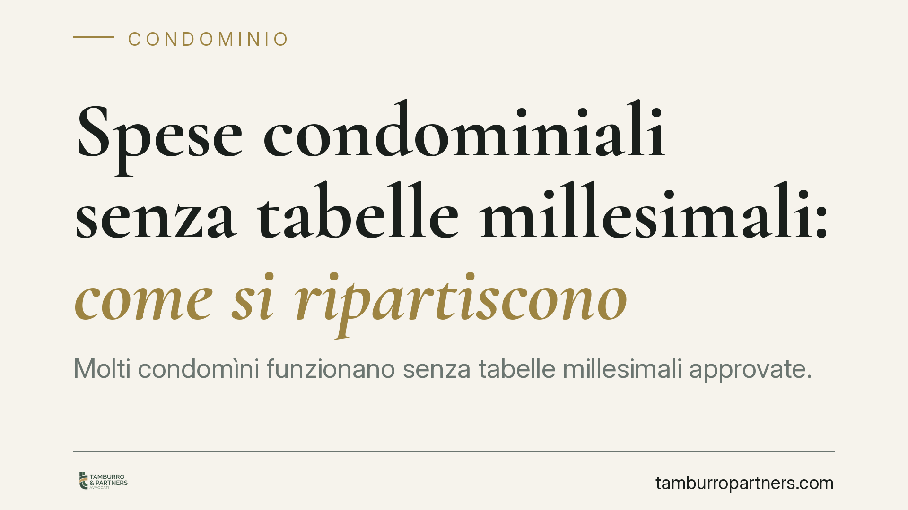

Spese condominiali senza tabelle millesimali: come si ripartiscono
Molti condomìni funzionano senza tabelle millesimali approvate. In questi casi la ripartizione delle spese resta un problema concreto: l'assemblea può deliberare criteri provvisori, ma solo entro precisi limiti. La Cassazione distingue tra spese ordinarie e straordinarie e tra delibere nulle e annullabili. Capire la differenza è decisivo per non pagare più del dovuto e per impugnare nei tempi giusti.

Il problema: ripartire senza tabelle
Le tabelle millesimali sono il documento che esprime, in millesimi, il valore proporzionale di ogni unità immobiliare rispetto all'intero edificio. Servono a quantificare la quota di spesa a carico di ciascun condomino e il peso del suo voto in assemblea.
Accade però spesso che un condominio operi senza tabelle approvate: edifici datati, documentazione mai formalizzata, o tabelle contestate e mai sostituite. La domanda è quindi pratica: chi paga cosa, e in quale misura?
Inquadramento normativo
Il criterio generale è fissato dall'art. 1123 cod. civ.: le spese per la conservazione e il godimento delle parti comuni si ripartiscono in proporzione al valore della proprietà di ciascuno, salvo diversa convenzione. Il valore proporzionale è appunto quello espresso dalle tabelle.
L'art. 68 disp. att. cod. civ. conferma che il regolamento di condominio precisa il valore proporzionale di ciascun piano o porzione, ragguagliato in millesimi. La tabella, però, non ha funzione costitutiva: fotografa un valore che esiste già. Per questo la Cassazione (Sez. 2) ha chiarito che la loro mancanza non paralizza la gestione del condominio.
In assenza di tabelle, l'assemblea può deliberare, con le maggioranze dell'art. 1136 cod. civ., una ripartizione provvisoria delle spese di gestione ordinaria, a titolo di acconto e salvo conguaglio. Si tratta di uno strumento pensato per non bloccare le attività indispensabili (pulizie, luce scale, piccola manutenzione), in attesa della formazione o approvazione delle tabelle.
Spese ordinarie e spese straordinarie: i limiti
La distinzione è centrale. Per la gestione ordinaria, l'assemblea può approvare a maggioranza un riparto provvisorio, purché dichiaratamente in acconto e con l'impegno al conguaglio una volta definito il valore effettivo delle quote.
Per le spese straordinarie e per gli interventi di maggiore rilievo (innovazioni, opere di manutenzione straordinaria significative) il margine è più stretto. Qui la corretta proporzione tra le quote incide direttamente e in misura rilevante sul peso economico di ciascuno: una ripartizione approssimativa può tradursi in un esborso ingiusto non recuperabile.
Delibera nulla o annullabile: perché conta
La differenza non è teorica, incide sui termini e sulla strategia di tutela.
Secondo l'orientamento della Cassazione, è annullabile la delibera che applica in modo errato criteri di ripartizione comunque esistenti o validi: va impugnata ai sensi dell'art. 1137 cod. civ. entro trenta giorni (dalla deliberazione per i presenti dissenzienti o astenuti, dalla comunicazione per gli assenti). Scaduto il termine, la delibera si consolida.
È invece nulla, e quindi impugnabile senza limiti di tempo, la delibera che modifica i criteri legali o convenzionali di ripartizione in assenza del consenso di tutti i condomini, incidendo in modo definitivo sui diritti individuali.
Chi riceve un riparto che ritiene errato deve quindi qualificare correttamente il vizio: confondere nullità e annullabilità può significare perdere ogni possibilità di contestazione.
Implicazioni pratiche
Per il singolo condomino, l'assenza di tabelle non è un vuoto che consente di non pagare. L'assemblea mantiene il potere di deliberare acconti per l'ordinario. Il condomino resta però esposto al rischio di una ripartizione provvisoria sbilanciata, soprattutto per gli interventi più onerosi.
Per l'amministratore, procedere senza tabelle impone cautela: ogni riparto provvisorio va qualificato come acconto salvo conguaglio e la gestione straordinaria richiede la massima attenzione alle maggioranze e ai diritti individuali.
Cosa fare in concreto
- Verificate se esistono tabelle millesimali approvate e, in caso negativo, promuovete in assemblea la loro formazione o approvazione.
- Controllate la natura delle spese deliberate: distinguete tra gestione ordinaria (riparto provvisorio ammesso) e straordinaria (limiti più rigorosi).
- Leggete il verbale e il piano di riparto: accertate che la ripartizione provvisoria sia espressamente qualificata come acconto salvo conguaglio.
- Calcolate i termini: se ritenete la delibera illegittima, valutate se si tratta di vizio annullabile (trenta giorni) o di nullità (senza termine).
- Documentate per iscritto le vostre contestazioni, conservando convocazioni, verbali e comunicazioni ricevute.
Consigliamo, prima di qualsiasi versamento o impugnazione, di far esaminare la documentazione condominiale da un professionista, per qualificare correttamente il vizio e non lasciar decorrere i termini.
---
*Contributo informativo a cura di Tamburro & Partners - Avv. Giuseppe Tamburro. Non costituisce parere legale.*
Ogni condominio ha una storia a sé.
Se gestisci un'amministrazione e vuoi un confronto su una specifica questione condominiale, scrivi allo studio. Ti rispondiamo entro un giorno lavorativo.